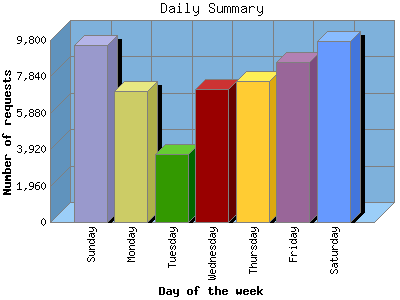

NPS Internet Solutions, Inc.
NPS Internet Solutions, Inc.
The Daily Summary identifies the level of activity as a total for each day of the week. This summary also compares the level of activity on weekdays and weekends as a total for the report time frame.

| Day of the week | Number of requests | Number of page requests | Number of bytes transferred | |
|---|---|---|---|---|
| 1. | Sunday | 9,508 | 851 | 1.073 GB |
| 2. | Monday | 7,060 | 734 | 770.845 MB |
| 3. | Tuesday | 3,651 | 444 | 385.951 MB |
| 4. | Wednesday | 7,178 | 706 | 1.008 GB |
| 5. | Thursday | 7,618 | 776 | 993.934 MB |
| 6. | Friday | 8,609 | 958 | 1.047 GB |
| 7. | Saturday | 9,766 | 867 | 1.163 GB |
| Total Weekdays | 34,116 | 3,618 | 4.156 GB | |
| Total Weekend | 19,274 | 1,718 | 2.236 GB | |
This report was generated on August 16, 2004 03:59.
Report time frame December 30, 2003 01:23 to August 16, 2004 09:47.
| Web statistics report powered by: | |
|
NPS Internet Solutions, Inc.
|
|
| Web statistics report produced by: analog 5.32 / Report Magic 2.21 |